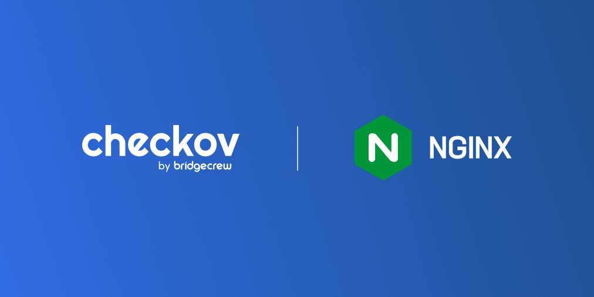

A quick search on Shodan shows over 17 million active deployments of NGINX that currently return a 200 OK response. For those not familiar with NGINX, it is the most popular web server on the planet. It can also be used as a reverse proxy, load balancer, mail proxy, and HTTP cache.
Shodan is a way of searching the internet for the unseen elements of online interactions and is often used by attackers and researchers alike to find anything, from open docker API ports to cloud misconfigurations to publicly accessible IoT devices like webcams.
While not all of these NGINX servers will be pods in a Kubernetes cluster, it does show the magnitude of adoption. It also shows why we really should do everything possible to secure them, as they are the single most implemented front-end applications in modern cloud-native environments.
With such widespread adoption, one might assume a simple DuckDuckGo search would reveal a plethora of examples of secure Kubernetes deployments of NGINX to get us started on the right foot.
Recently, I decided to create a secure NGINX for a rather simple website I was creating for my cloud-native Twitch show. So, I went hunting and gathering for what materials the hive mind of the internet presented. While they most likely exist, I fell short of finding them. At the very least, any secure defaults or blogs were vastly outnumbered and over SEO’d by the volume of “getting started” examples, which paid little mind to security.
For example, the most popular search result and I can only guess, the starting example would be directly from the Kubernetes documentation. It is a basic deployment with NGINX as the pod and an associated service that exposes it.
NOTE: My website image eurogig/clust3rf8ck:0.1 Dockerfile uses FROM arm64v8/nginx:alpine
apiVersion: apps/v1
kind: Deployment
metadata:
labels:
app: clust3rf8ck
name: clust3rf8ck
spec:
replicas: 1
selector:
matchLabels:
app: clust3rf8ck
template:
metadata:
labels:
app: clust3rf8ck
spec:
containers:
- image: eurogig/clust3rf8ck:0.1
name: clust3rf8ck
resources: {}
---
apiVersion: v1
kind: Service
metadata:
creationTimestamp: null
labels:
app: clust3rf8ck
name: cflb
spec:
ports:
- name: 80-80
port: 80
protocol: TCP
targetPort: 80
selector:
app: clust3rf8ck
type: LoadBalancer
status:
loadBalancer: {}
As an experiment (which prompted this blog), I decided to start with this as my default Kubernetes YAML and see what Checkov, an open-source IaC scanning tool, thought of my efforts so far.
kubernetes scan results: Passed checks: 71, Failed checks: 19, Skipped checks: 0
Only 19 failed checks! Or more positively put, 71/90! That’s a solid 79%. I could pass a CKx exam with a score like that! Unfortunately, as is often the cliched yet correct phrase in security circles, security needs to get it right 100% of the time and the baddies only need to get it right once.
19 failed checks were 19 too many for me to accept, and so I started looking through what it took to get a 100% score with Checkov. Here is my breakdown of that journey broken down into Easy wins, the doable, the complex, and in some cases, the confusing.
The easy wins
Check: CKV_K8S_23: “Minimize the admission of root containers”
FAILED for resource: Deployment.clust3rf8ck.clust3rf8ck
Why this is important: The root user (UID 0) is the default user inside a container (assuming Docker). If you don’t specify a non-root user, the container runs as root. A root user inside a container can basically run every command as a root user on a traditional host system. And much worse, in the case of a container breakout, the root user can access and execute anything on the underlying host as a highly privileged user as well. This means host filesystem mounts are at risk, access to username/passwords, and many other risks associated with root access on a node. The keys to the kingdom are yours.
This check is verifying that a user has been specified as a part of the k8s object-level Security Context. This was an easy win, as the NGINX container runs as user nginx and does not require being root to execute. It was just a case of being a bit more declarative in my deployment YAML. Experienced users might notice the runAsUser is set to something other than the default NGINX UID of 101. We’ll get to that later.
Example:
spec: securityContext: runAsNonRoot: true runAsUser: 10014
Check: CKV_K8S_21: “The default namespace should not be used”
FAILED for resource: Service.cflb.default
Why this is important: For isolation purposes of your applications and to avoid unnecessary accidental disruption with other services, you should avoid the default namespace. Sometimes this fires simply because the namespace is applied imperatively to the deployment via the kubectl apply -f clust3rf8ck.yaml -n <namespace>. It’s an easy win and best practice to add it directly to the code so it’s 100% clear. Even adding the creation of the namespace into your YAML isn’t a problem, as it will only throw a warning if it’s already present.
Example (namespace added to this a k8s object):
metadata: labels: app: nginx name: nginx namespace: webserver
Check: CKV_K8S_20: “Containers should not run with allowPrivilegeEscalation”
FAILED for resource: Deployment.clust3rf8ck.clust3rf8ck (container 0) – clust3rf8ck
Why this is important: This one probably seems obvious but the devil is in the details. Privilege Escalation is bad. The AllowPrivilegeEscalation set to false in the pod security context controls ensures that no child process of a container can gain more privileges than its parent. Sudo is such a common capability that it can be used with an almost flippant level of utility. It’s often used for debugging a running container. It also provides a form of root access that can enable an attacker to do things like mounting the file system from the node and to potentially move laterally to higher-risk targets. In more detail, setting this to false ensures the no_new_privs flag gets set on the container process. This flag will prevent setuid binaries, changing the effective user ID, enabling extra capabilities, and even blocks the use of ping.
This is an easy win in particular because you should not need to escalate your privilege in production, and it is one of the single most important controls to apply.
Check: CKV_K8S_15: “Image Pull Policy should be Always”
FAILED for resource: Deployment.clust3rf8ck.clust3rf8ck (container 0) – clust3rf8ck
Why this is important: The current Kubernetes default is bordering on confusing and I almost put this check into that category later on in this article. It is still an easy win though! The default for a deployment or stateful set is in fact IfNotPresent. While this sounds reasonable, setting it to Always ensures new pods pull images from the source with valid credentials, instead of pulling the image locally without credentials. In the case where we have also failed CKV_K8S_43 and are pulling only by tag, we cannot guarantee what image we are actually pulling. It is confusing because the Kubernetes documentation for this also says that, “When imagePullPolicy is defined without a specific value, it is also set to Always,” which is not an obvious double standard. It is a best practice to add it explicitly to the code as Always.
Check: CKV_K8S_28: “Minimize the admission of containers with the NET_RAW capability”
FAILED for resource: Deployment.clust3rf8ck.clust3rf8ck (container 0) – clust3rf8ck
Why this is important: The NET_RAW capability empowers total control and visibility over network traffic. Even traditional security and IT infosec enthusiasts with no cloud-native experience will understand how bad this sounds. So much so that it is best practice to explicitly drop this capability in order to make it 100% clear that this is not required for the execution of this deployment. For NGINX and almost all other applications, this is definitely NOT a requirement. In fact, it is worth questioning any application (some security applications may actually need this) which claims to require it. This is added to the security context for the container and can be solved by adding -ALL or specifically - NET_RAW.
securityContext: capabilities: drop: + - ALL
Check: CKV_K8S_43: “Image should use digest”
FAILED for resource: Deployment.clust3rf8ck.clust3rf8ck (container 0) – clust3rf8ck
Why this is important: Many IaC scanners will check to make sure you are not using something vague like latest as your container tag. There is a Checkov rule for this as well. We passed that check because we were using a specific version tag, which is a known good practice. As we improve our security and become more acutely aware of how supply chain attacks can occur, it is becoming more common to be completely explicit about which container image we want by using the SHA256 digest. This digest is unique to the specific build of the image and will change on a new build, even if the image tag does NOT! That means that a malicious actor in your supply chain, who can rebuild and push a malicious version of your container with the same tag (eg. nginx:1.17), cannot override the image your deployment is using as the digest will change. This is an easily implemented risk mitigation strategy. While not as secure as container image signing, it is a vast improvement for supply chain security.
containers: - name: nginx - image: nginx@1.17 + image: nginx@sha256:45b23dee08af5e43a7fea6c4cf9c25ccf269ee113168c19722f87876677c5cb2
Check: CKV_K8S_38: “Ensure that Service Account Tokens are only mounted where necessary”
FAILED for resource: Deployment.clust3rf8ck.clust3rf8ck
Why this is important: Because service account tokens are the keys to access to the cluster, should an attack achieve shell or remote code execution access to your running container, having access to your service account token means they have access to all of the associated capabilities. When you create a pod, if you do not specify a service account, it is automatically assigned the default service account in the same namespace. You can access the Kubernetes API from inside a pod using automatically mounted service account credentials. From a DevOps perspective, this sounds convenient. From a security perspective, it sounds scary!
Every service account has a secret related to it; this secret contains a bearer token. This Service Account token is used during the authentication stage and can become useful for attackers if the service account is privileged and they have access to such a token. With this token, an attacker can easily impersonate the service account and use REST APIs. Very much an easy win one-liner.
Example (Pod spec within the deployment):
spec: + automountServiceAccountToken: false
The doable
Check: CKV_K8S_9: “Readiness Probe Should be Configured”
FAILED for resource: Deployment.clust3rf8ck.clust3rf8ck (container 0) – clust3rf8ck
Check: CKV_K8S_8: “Liveness Probe Should be Configured”
FAILED for resource: Deployment.clust3rf8ck.clust3rf8ck (container 0) – clust3rf8ck
Check: CKV_K8S_12: “Memory requests should be set”
FAILED for resource: Deployment.clust3rf8ck.clust3rf8ck (container 0) – clust3rf8ck
Check: CKV_K8S_13: “Memory limits should be set”
FAILED for resource: Deployment.clust3rf8ck.clust3rf8ck (container 0) – clust3rf8ck
Check: CKV_K8S_10: “CPU requests should be set”
FAILED for resource: Deployment.clust3rf8ck.clust3rf8ck (container 0) – clust3rf8ck
Check: CKV_K8S_11: “CPU limits should be set”
FAILED for resource: Deployment.clust3rf8ck.clust3rf8ck (container 0) – clust3rf8ck
Why this is important: The “Availability” part of the CIA triad (Confidentiality, Integrity and …) is an often overlooked part of security. Ensuring that k8s have the ability to know when your pods are gone or running slower (possibly due to a crypto-miner) is a key part of security and just general good functionality at scale. Liveness and readiness probes are key to ensuring the availability of your pod and deployment, but with each application and base image comes the challenges of creating an appropriate check to best represent both an indication it is ready and that it is currently alive.
Availability checks like this also go hand-in-hand with the CPU and memory limit requirements to ensure these are set correctly. In our recent study on the State of Helm, we found that these were some of the most often misconfigured (missing) parts of a secure deployment.
Like the liveness and readiness probes, the trouble with CPU and memory limits is knowing what are good parameters to set early on. It’s a chicken and egg scenario where you don’t know what sensible limits look like before running it in test. A good practice is to still add these fields, even with slightly more generous allowances, and to make testing the performance of production pods part of the development test process. For details on the settings I used for the liveness, readiness, and CPU and memory limits, check the full deployment at the end of this article.
The confusing/complicated
Check: CKV_K8S_29: “Apply security context to your pods and containers”
FAILED for resource: Deployment.clust3rf8ck.clust3rf8ck
Check: CKV_K8S_30: “Apply security context to your pods and containers”
FAILED for resource: Deployment.clust3rf8ck.clust3rf8ck (container 0) – clust3rf8ck
Why this is important: Many of the security defaults aren’t ideal and so many example deployments do NOT have the Security Context section present at all! What is confusing about this is that there are two places where Security Context can be added and it is not always clear within which the misconfiguration has occurred.
Example:
CKV_K8S_29 is for the k8s object
CKV_K8S_30 is for the container itself. # as indicated by the subtle “(container 0)”
Below is an example of one such check:
Check: CKV_K8S_40: “Containers should run as a high UID to avoid host conflict”
FAILED for resource: Deployment.clust3rf8ck.clust3rf8ck
The hint as to which security context this belongs in is indicated by the missing container identifier in the FAILED description. From this, we can learn that it belongs in the k8s object security context.
Why this is important: Kubernetes hosts use UIDs < 1000 for system-level function, so using a high UID for the default USER in your container is ideal to ensure safe passage and no conflicts with system-level UID and capabilities. Checkov looks to ensure the default user has a UID over 10000 to be absolutely sure. The caveat in some cases (and certainly our case) is that we don’t have control over the default UID. In our case, the default UID for the NGINX user is 101 and the group ID is 101. This is not ideal as 101 was a common default for more than just NGINX. The good news is that we can change the UID and GID in our Dockerfile, even for an Alpine-based container, so that we are adhering to this best practice. Let’s take a quick look at how.
In your Docker file add the following line:
RUN apk --no-cache add shadow && usermod -u 10014 nginx && \ groupmod -g 10014 nginx && apk del shadow
While Alpine does not have the utilities usermod and groupmod by default, you can temporarily install a utility called shadow which does add these. From here we can execute a change to our NGINX UID and GID and remove shadow in a single layer. You may recall that in our first check summary we had set our runAsUser to 10014. This is why that worked. Here it is again.
spec: securityContext: runAsNonRoot: true runAsUser: 10014
Check: CKV_K8S_22: “Use read-only filesystem for containers where possible”
FAILED for resource: Deployment.clust3rf8ck.clust3rf8ck (container 0) – clust3rf8ck
Why it is complicated: Some applications perform caching or occasional writes to tmp files to improve performance to retain a temporary state. A web server is one such application. However, attempts to create a read-only filesystem can lead to a much more secure result. A writable filesystem is bad, as attackers will often not include a malicious payload by default, but will hide a backdoor that does not match any known malware signature or download a payload via remote code execution. This allows them to retrieve the payload from a command and control center at runtime. A read-only filesystem means they will not be able to create the payload blocking the attack early in the MITRE ATT&CK kill chain.
Here’s how I did it for my NGINX deployment. It’s not perfect as there are still writable locations but it’s far better than a fully writable filesystem. I would welcome any pull requests on my git repo with an improved solution:
In the container security context (again indicated by the “container 0”), I added the following:
securityContext: readOnlyRootFilesystem: true
In order to create the temporary container cache, I used the following volumes to create a type emptyDir and mounted them to the container in my specific cache locations.
volumeMounts: - mountPath: /var/cache/nginx name: cache-volume - mountPath: /var/run name: pid-volume
The emptyDir volume
volumes:
- name: cache-volume
emptyDir: {}
- name: pid-volume
Check: CKV_K8S_31: “Ensure that the seccomp profile is set to docker/default or runtime/default”
FAILED for resource: Deployment.clust3rf8ck.clust3rf8ck
Why it is confusing: To know Kubernetes, you need to first know Linux. Seccomp is a Linux security profile that prohibits the use of certain system calls and should be associated with your deployment but is often left undefined. The byproduct of leaving it is that it will run containers with seccomp set to “unconfined,” which means the container has the capability to run a rather dangerous breadth of system calls. Simply specifying the default of either runtime or docker greatly tightens the security capabilities of the resulting deployment. Check out this Docker article for a full list of what is blocked simply by applying the default runtime profile. Note: Kubernetes 1.22 introduced the default (when undeclared) seccomp being set to our desired state of RuntimeDefault rather than unconfined, but this is only in alpha at the moment. It is still best practice to declare it specifically.
Check: CKV_K8S_37: “Minimize the admission of containers with capabilities assigned”
FAILED for resource: Deployment.clust3rf8ck.clust3rf8ck (container 0) – clust3rf8ck
Why it is confusing: This is a confusing and/or complicated error because some capabilities might be required.
It’s worth noting that rules within Checkov can be “suppressed” in cases where they simply do not apply or cannot be overcome and the security risk has been suitably accepted.
Knowing exactly which capabilities are required for what is part of the engineering design, which goes back to the mantra to know Kubernetes you must first know Linux. The idea here is to instill least privilege by default through declaring as little capability as possible. This check was also highlighted during our State of Helm research. This specific check at the time of writing this blog looks to see that we add drop: ALL specifically in the container security context. This check is also confusing because it applies only to the container security context “container” and not the Pod security context.
securityContext:
capabilities:
drop:
+ - ALL
The code
The resulting Dockerfile and NGINX deployment passes Checkov with a 100% success rate.
kubernetes scan results: Passed checks: 90, Failed checks: 0, Skipped checks: 0
A VSCode diff between my start and finish.

The code is below and also used in the Github repo. If you’d like more tech detail on how they work (or if you find a problem), why not join our Slack community and become part of the secure IaC solution!
The Dockerfile
FROM nginx:alpine as build
RUN apk add --update \
wget
ARG HUGO_VERSION="0.84.1"
RUN wget --quiet "https://github.com/gohugoio/hugo/releases/download/v${HUGO_VERSION}/hugo_${HUGO_VERSION}_Linux-64bit.tar.gz" && \
tar xzf hugo_${HUGO_VERSION}_Linux-64bit.tar.gz && \
rm -r hugo_${HUGO_VERSION}_Linux-64bit.tar.gz && \
mv hugo /usr/bin
COPY clust3rf8ck/ /site
WORKDIR /site
RUN hugo
#Copy static files to NGINX
FROM arm64v8/nginx:alpine
COPY --from=build /site/public /usr/share/nginx/html
COPY --from=build /site/default.conf /etc/nginx/conf.d/default.conf
RUN mkdir -p /var/cache/nginx
RUN apk --no-cache add shadow && usermod -u 10014 nginx && \
groupmod -g 10014 nginx
RUN apk del shadow
RUN chown -R nginx:nginx /usr/share/nginx/html && \
chown -R nginx:nginx /var/cache/nginx && \
chown -R nginx:nginx /var/log/nginx && \
chown -R nginx:nginx /etc/nginx/conf.d
RUN touch /var/run/nginx.pid && \
chown -R nginx:nginx /var/run/nginx.pid
USER nginx
WORKDIR /usr/share/nginx/html
The NGINX Deployment
apiVersion: apps/v1
kind: Deployment
metadata:
labels:
app: clust3rf8ck
name: clust3rf8ck
namespace: clust3rf8ck
spec:
replicas: 2
selector:
matchLabels:
app: clust3rf8ck
strategy: {}
template:
metadata:
creationTimestamp: null
labels:
app: clust3rf8ck
annotations:
seccomp.security.alpha.kubernetes.io/pod: "docker/default"
spec:
affinity:
podAntiAffinity:
requiredDuringSchedulingIgnoredDuringExecution:
- labelSelector:
matchExpressions:
- key: app
operator: In
values:
- clust3rf8ck
topologyKey: "kubernetes.io/hostname"
containers:
- image: eurogig/clust3rf8ck@sha256:a374eb5853e0e17d06bcf37afc2fcb40892aa3477caf362ea3581c71373cb90a
name: clust3rf8ck
imagePullPolicy: Always
resources:
limits:
cpu: "1"
memory: "200Mi"
requests:
cpu: "0.6"
memory: "100Mi"
livenessProbe:
exec:
command:
- /bin/sh
- -c
- "[ -f /var/run/nginx.pid ] && ps -A | grep nginx"
initialDelaySeconds: 10
periodSeconds: 5
readinessProbe:
httpGet:
scheme: HTTP
path: /index.html
port: 8080
initialDelaySeconds: 10
periodSeconds: 5
securityContext:
readOnlyRootFilesystem: true
allowPrivilegeEscalation: false
capabilities:
drop:
- ALL
- NET_RAW
volumeMounts:
- mountPath: /var/cache/nginx
name: cache-volume
- mountPath: /var/run
name: pid-volume
automountServiceAccountToken: false
securityContext:
runAsNonRoot: true
runAsUser: 10014
runAsGroup: 10014
volumes:
- name: cache-volume
emptyDir: {}
- name: pid-volume
emptyDir: {}
status: {}
---
apiVersion: v1
kind: Service
metadata:
creationTimestamp: null
labels:
app: clust3rf8ck
name: cflb
namespace: clust3rf8ck
spec:
ports:
- name: 80-80
port: 80
protocol: TCP
targetPort: 8080
selector:
app: clust3rf8ck
type: LoadBalancer